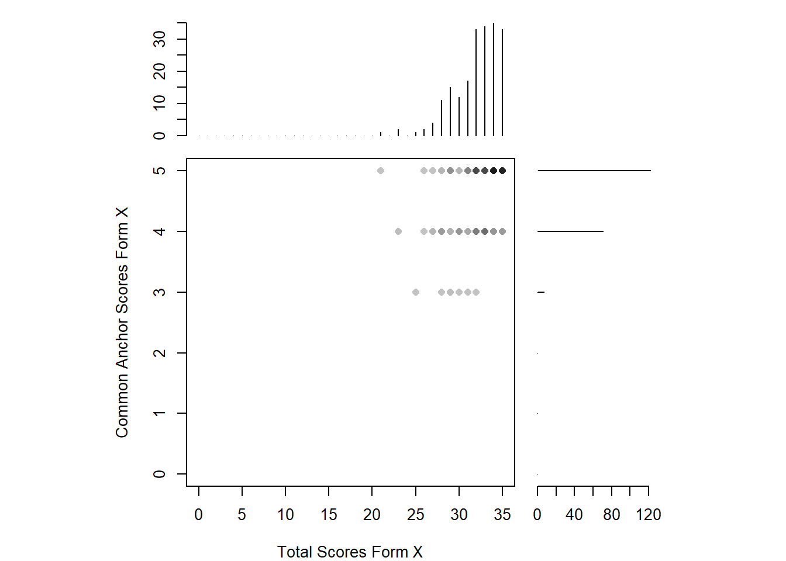
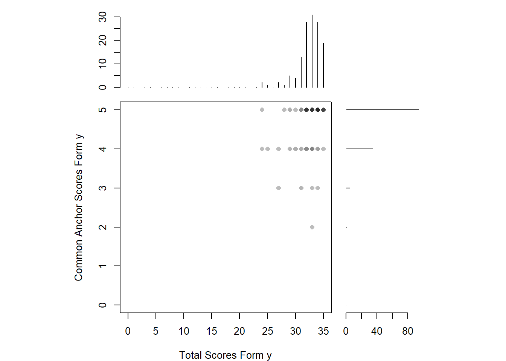
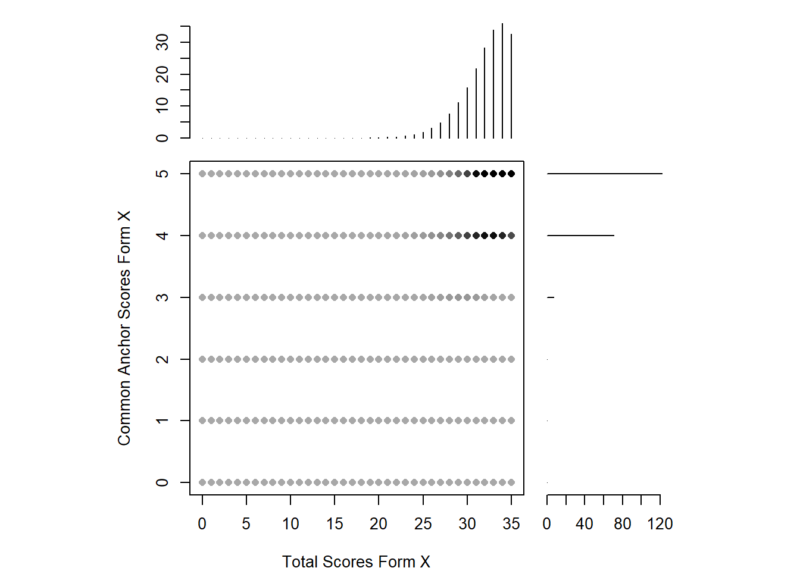
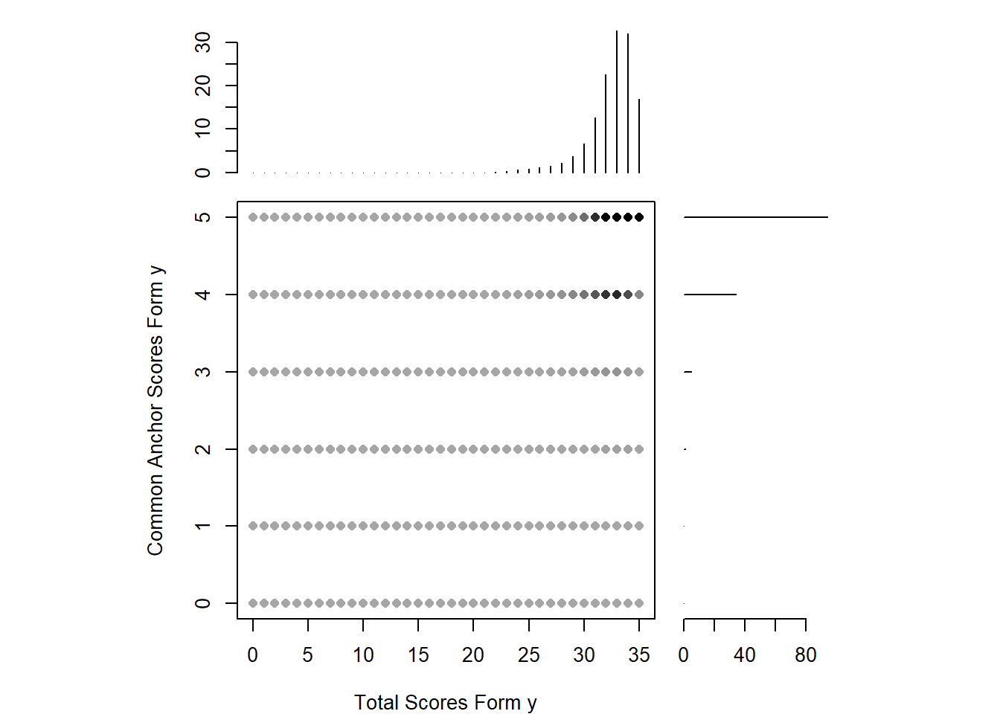
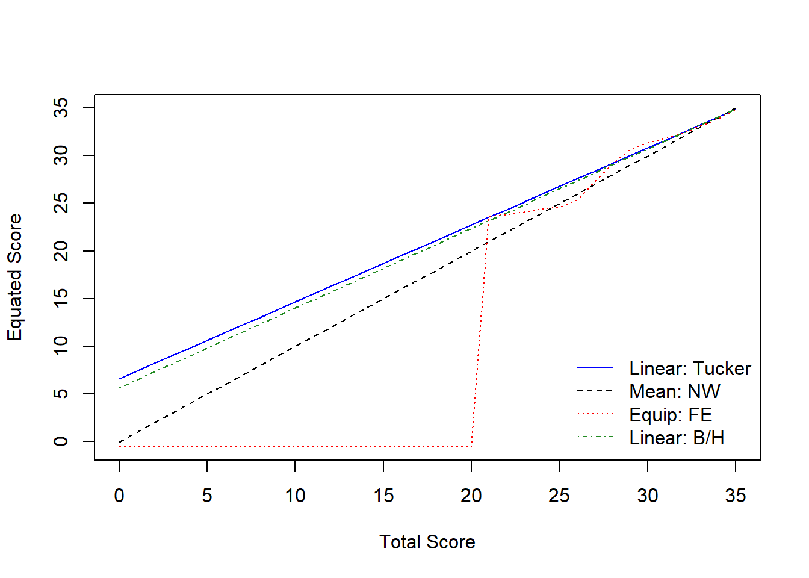

![]()
L1 L2 L3 L4 L5 L6 L7 L8 L9 L10 S1 S2 S3 S4 S5 S6 S7 S8 S9 S10 V1 V2 V3 V4 V5
1 0 1 0 1 1 1 0 1 1 0 1 1 0 1 0 0 0 0 0 1 0 1 1 0 1
2 1 1 1 1 1 1 1 1 1 1 0 1 1 0 1 1 0 0 0 0 1 1 1 1 0
3 1 1 1 1 1 1 0 1 1 0 1 1 0 1 1 0 0 1 1 0 0 1 0 1 0
4 1 1 1 1 1 1 1 0 1 0 1 1 0 1 1 0 1 1 0 0 0 1 1 0 1
5 1 1 1 1 1 1 1 0 1 1 1 1 1 1 0 1 0 1 0 0 1 1 1 0 0
6 1 1 1 1 0 0 1 1 1 1 0 0 0 0 0 1 1 1 1 1 1 1 1 0 0
V6 V7 V8 V9 V10 R1 R2 R3 R4 R5 R6 R7 R8 R9 R10 form
1 0 1 1 1 1 1 1 0 1 1 1 1 1 1 1 x
2 0 1 1 0 0 1 0 1 1 0 1 1 0 1 1 x
3 1 0 1 1 1 1 0 0 1 1 1 0 1 1 1 x
4 1 1 1 0 1 1 1 1 1 0 1 0 0 1 1 x
5 1 1 1 0 1 1 1 1 0 1 1 1 0 1 1 x
6 1 1 1 1 1 1 1 1 1 1 1 1 1 1 1 xThis is a simple test equating study. The data used in this study is simulated from real data. We don’t use the real data for privacy purposes here.
2020-2021 Fall Term A Level’s first quiz has 40 items. 2022-2023 Fall Term A Level’s first quiz has 40 items. 35 of the items in each test forms are unique items while 5 of them are common, thus will be called as “anchor items” in this study. For the readers interest, the items belong to four main domains (listening, structure, vocabbulary and reading), yet the common items are only in the reading section. This is obviously a violation of assumptions of test equating. Still, this study is conveyed for demonstration purposes. Therefore, let’s continue:
To ensure statistical equation of these two forms, we first introduced the data in R Studio and the first five rows can be seen below:
Later, we introduced the unique and anchor items separately. First 35 items are unique items, and the last 5 items are anchor items.
As we will use the equate package, the data should be contained as frequency tables: Form x (20-21 fall) had a sample of 200 while form y (22-23 fall) had a sample of 133 students. They are defined as:
To consideration of the reader one more time, we must state that these forms are the first quizzes of the students. They usually get high marks. For instance, you can see below that the students’ scores are distributed left-skewed in both forms. Their total correct answers are distributed between 20 and 35 for the unique items , and between 3 and 5 for anchor items in form X. The situation isn’t different for form y.
Code
#distrubution of the data among forms and unique/common items
plot(Q1_x, xlab = "Total Scores Form X", ylab = "Common Anchor Scores Form X")
Code
plot(Q1_y, xlab = "Total Scores Form y", ylab = "Common Anchor Scores Form y")
Still, let’s continue… with the smoothing procedure. For both forms, we utilized loglinear presmoothing. Of course there are several other methods, yet literature shows not much a big difference between them, thus not much care given to this issue. again as this is a study with demonstration purposes. After the smoothing, it can be realized that the distribution is highly eye-pleasing right now. Also it is much easier to match the scores even if there isn’t an equivalent of it in the other form.
Code
#PRESMOOTHING
smooth_x <- presmoothing(Q1_x, smoothmethod = "loglinear")Warning: glm.fit: fitted rates numerically 0 occurredCode
smooth_y <- presmoothing(Q1_y, smoothmethod = "loglinear")Warning: glm.fit: algorithm did not converge
Warning: glm.fit: fitted rates numerically 0 occurredCode
plot(smooth_x, xlab = "Total Scores Form X", ylab = "Common Anchor Scores Form X")
Code
plot(smooth_y, xlab = "Total Scores Form y", ylab = "Common Anchor Scores Form y")
Now, it can be roughly said that the forms are ready to be equated. Before we try several methods, lets see the results of the Tucker method as it can produce equating error as well:
Code
## Linear Tucker Equating
Q1_tucker <- equate(Q1_x, Q1_y, type = "linear", method = "tucker")
Q1_tucker$concordance scale yx se.n se.g
1 0 6.597617 2.0378528 3.3547355
2 1 7.404998 1.9751403 3.2551073
3 2 8.212379 1.9124541 3.1554875
4 3 9.019759 1.8497970 3.0558770
5 4 9.827140 1.7871721 2.9562768
6 5 10.634520 1.7245827 2.8566879
7 6 11.441901 1.6620331 2.7571116
8 7 12.249282 1.5995277 2.6575492
9 8 13.056662 1.5370720 2.5580024
10 9 13.864043 1.4746724 2.4584730
11 10 14.671423 1.4123363 2.3589634
12 11 15.478804 1.3500723 2.2594761
13 12 16.286185 1.2878911 2.1600141
14 13 17.093565 1.2258052 2.0605812
15 14 17.900946 1.1638299 1.9611818
16 15 18.708326 1.1019838 1.8618212
17 16 19.515707 1.0402899 1.7625060
18 17 20.323088 0.9787772 1.6632444
19 18 21.130468 0.9174818 1.5640464
20 19 21.937849 0.8564507 1.4649252
21 20 22.745229 0.7957445 1.3658973
22 21 23.552610 0.7354438 1.2669847
23 22 24.359991 0.6756570 1.1682166
24 23 25.167371 0.6165338 1.0696330
25 24 25.974752 0.5582849 0.9712903
26 25 26.782132 0.5012154 0.8732696
27 26 27.589513 0.4457784 0.7756933
28 27 28.396894 0.3926659 0.6787528
29 28 29.204274 0.3429596 0.5827655
30 29 30.011655 0.2983669 0.4882941
31 30 30.819035 0.2615166 0.3964236
32 31 31.626416 0.2360629 0.3094791
33 32 32.433797 0.2258919 0.2330408
34 33 33.241177 0.2330134 0.1809526
35 34 34.048558 0.2559883 0.1763087
36 35 34.855938 0.2910866 0.2221053You will see that the equating errors are above 1 before the score of 25 as there isn’t much data in the low scores. Also, as we investigate the lower marks, we see that the gap between equated scores are increasing. For instance, 0 on form X is equal to 6.597617 on form Y. This is because there isn’t data in these regions of the scores. Despite that, equated scores get more meaningful after 20. Especially after the total score 30, the equated scores are too close and the equation error is too low, which would be quite better if the situation was like that on all total score ranges. Let’s see some other equating methods:
Code
## Comparing Multiple Methods
# Nominal method with mean equating
Q1_nom <- equate(Q1_x, Q1_y, type = "mean", method = "nom")
# Frequency method with equipercentile
Q1_freq <- equate(Q1_x, Q1_y, type = "equip", method = "freq")
# Braun method with linear equating
Q1_braun <- equate(Q1_x, Q1_y, type = "linear", method = "braun")
# Compare equated scores
round(cbind(xscale = 0:35,
nominal = Q1_nom$concordance$yx,
tucker = Q1_tucker$concordance$yx,
freq = Q1_freq$concordance$yx,
braun = Q1_braun$concordance$yx), 2) xscale nominal tucker freq braun
[1,] 0 -0.01 6.60 -0.50 5.65
[2,] 1 0.99 7.40 -0.50 6.49
[3,] 2 1.99 8.21 -0.50 7.32
[4,] 3 2.99 9.02 -0.50 8.16
[5,] 4 3.99 9.83 -0.50 9.00
[6,] 5 4.99 10.63 -0.50 9.83
[7,] 6 5.99 11.44 -0.50 10.67
[8,] 7 6.99 12.25 -0.50 11.50
[9,] 8 7.99 13.06 -0.50 12.34
[10,] 9 8.99 13.86 -0.50 13.17
[11,] 10 9.99 14.67 -0.50 14.01
[12,] 11 10.99 15.48 -0.50 14.84
[13,] 12 11.99 16.29 -0.50 15.68
[14,] 13 12.99 17.09 -0.50 16.51
[15,] 14 13.99 17.90 -0.50 17.35
[16,] 15 14.99 18.71 -0.50 18.19
[17,] 16 15.99 19.52 -0.50 19.02
[18,] 17 16.99 20.32 -0.50 19.86
[19,] 18 17.99 21.13 -0.50 20.69
[20,] 19 18.99 21.94 -0.50 21.53
[21,] 20 19.99 22.75 -0.50 22.36
[22,] 21 20.99 23.55 23.66 23.20
[23,] 22 21.99 24.36 23.82 24.03
[24,] 23 22.99 25.17 24.10 24.87
[25,] 24 23.99 25.97 24.38 25.71
[26,] 25 24.99 26.78 24.57 26.54
[27,] 26 25.99 27.59 25.35 27.38
[28,] 27 26.99 28.40 27.28 28.21
[29,] 28 27.99 29.20 29.14 29.05
[30,] 29 28.99 30.01 30.65 29.88
[31,] 30 29.99 30.82 31.34 30.72
[32,] 31 30.99 31.63 31.76 31.55
[33,] 32 31.99 32.43 32.35 32.39
[34,] 33 32.99 33.24 33.09 33.22
[35,] 34 33.99 34.05 33.88 34.06
[36,] 35 34.99 34.86 34.86 34.90Although the equating methods vary, the results are similar to those of Tucker method. Especially Frequency Estimation method shows how important it is to have data in different score ranges because there is no meaningful equation before the scale score of 20 and all lower scores are equated to -.5 in this method. Let’s also see the plotting of the chart above:
Code

As also can be seen in the plot above, after the scale score of 20, all equating methods are quite similar to each other. Scores lower than 20 are equated with linear methods much better than the equi-percentile method as there isn’t adequate data in those score ranges.
This study is conducted for demonstrative purposes and still we can say that scale scores over 30 can be equated in the given forms.